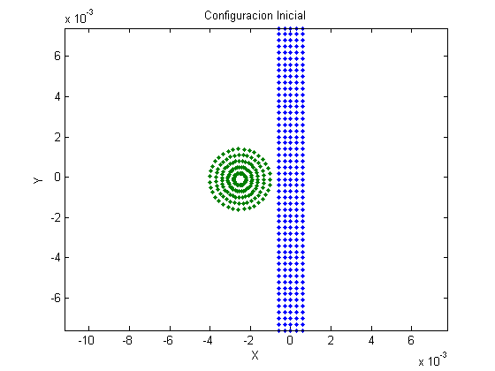

Contents
Bullet_Impact
Simulacion de impacto
Version 1
Marzo 18 - 2015
Author: J. Camilo Alfonso R.
Codigo basado en rutinas de Ing. Daniel Luna
Profesor Asesor: Andres Gonzalez Mancera
Problema Especial IMEC
Simulacion de impacto entre proyectil ductil y objetivo fragil
Disponible en repositorio publico SPH
Se omiten tildes para evitar problemas de compatibilidad en ecoding
clear all; clc; close all;
Definir Geometria del Objetivo
Todas las unidades son dadas en el sistema internacional de unidades
Se define las posiciones de las particulas que conforman el objetivo
Geometria del objetivo
T_dy = 3e-4; % Separacion entre particulas T_dx = T_dy; % k = 2.0; % Constante para expandir radio de soporte h = k*T_dx; % Radio de soporte T_width = 0.0006; % Ancho del objetivo T_height = 0.0076; % Alto del objetivo T_x = -T_width : T_dx : T_width; T_y = -T_height : T_dy : T_height; [X,Y] = meshgrid(T_x, T_y); % Matriz con la malla de las posiciones x,y para las particulas Target = [X(:),Y(:)]; % | x_1 , y_1 | En esta matriz organiza % | . , . | todas las posiciones de las % | x_n , y_n | particulas. % [T_np x 2] T_np = size(Target,1); % Numero de particulas en el objetivo
Asignacion de defectos puntuales en Objetivo
Constantes para asginacion de fallas en basalto
m = 3; k = 7; V = T_dx*T_dy*1; % Volumen infinitesimal Nflaws = T_np*log(T_np); % Numero de defectos puntuales a asignar Nflaws = round(Nflaws); assign_flaws = randi(T_np,Nflaws,1,'uint32'); % [Nflaws x 1] % Nflaws numeros aleatorios entre 1 y T_np [Flaws{1:T_np,1}] = deal([]); % Flaws [cell array] {T_np x 1} % Cell array con ''T_np matrices vacias % Cell de pre-alocacion para fallas for i = 1:Nflaws Flaws{assign_flaws(i),1}(size(Flaws{assign_flaws(i),1})+1) = ... (i/(k*V))^(1/m); end
assign_flaws [Nflaws x 1] vector que contiene Nflaws posiciones de las fallas a generar. Las posiciones estan dadas como numeros enteros en relacion al numero de cada particula.
Flaws cell{T_np x 1} Contiene T_np matrices vacias que identifican las fallas para cada particula. Flaws se va llenando de forma aleatoria con las posiciones que indica assing_flaws. La primera vez que se pasa por una amtriz de Flaws, le asigna el numero (i/(k*V))^(1/m) formando una matriz 1x1. La segunda vez que se pasa por la misma matriz, aumenta la dimension de la matriz en una sola direccion para asignar otro numero. Asi, si semi-aleatoriamente, el numero k aparecio n veces de assign_flaws, la celda Flaws en su posicion k debe contener una matriz nx1 con numeros asignados. Los numeros asignados corresponden a las deformaciones de activacion para los defectos puntuales de cada particula
Constantes del Material Objetivo
Todas las unidades estan en el sistema internacional de unidades
T_r0 = 7850; %Densidad volumetrica del objetivo T_m0 = T_dx*T_dy*T_r0; %Masa de una particula %Parametros de Huggoniot ss = 4699; C = 3630; S = 1800; %Parametros de XSPH gamma = 1.81; alpha = 0.5; beta = 0.5; eta = 0.01; eps = 0.5; %Parametros de Elasticidad T_G = 8e10; % Modulo de cortante T_Y0 = 6e8; % Esfuerzo de fluencia T_E = ss^2*T_r0; % Modulo de Young
Definir Geometria del Proyectil
Se definen las posiciones de las particulas que conforman el proyectil.
Se asume que el proyectil se mueve en la direccion horizontal.
Proyectil rectangular
%{ s_x = 4e-4; % Separacion en x entre proyectil y objetivo B_width = T_width/5; % Ancho del proyectil B_height = T_height/5; % Alto del proyectil B_x0 = min(Target(:,1))-B_width-s_x; B_y0 = mean(Target(:,2)); % Posiciones de referencia para el objetivo B_dx = T_dx; % Separacion entre particulas del proyectil B_dy = B_dx; B_x = [-B_width : B_dx : B_width] + B_x0; B_y = [-B_height : B_dy : B_height] + B_y0; [X,Y] = meshgrid(B_x,B_y); % Matrices con la malla para las posiciones % de la particulas en el proyectil Bullet = [X(:),Y(:)]; % Posicion de las particulas en el pryectil B_np = size(Bullet,1); % Numero de particulas en el proyectil %}
Proyectil redondo
s_x = 4e-4; % separacion en x entre proyectil y objetivo B_dr = T_dx; % Variacion en el radio del proyectil B_rmax = T_height/5; % Radio maximo del proyectil B_r = B_dr:B_dr:B_rmax; % Valores del radio en el proyectil n_theta = 18*2; % Numero de puntos a considerar en el angulo B_theta = linspace(0,2*pi,n_theta); % Valores del angulo B_cx = min(Target(:,1)) - B_rmax - s_x; % Centro del proyectil B_cy = mean(Target(:,2)); B_np = length(B_r)*length(B_theta); %Numero de particulas en el proyectil Bullet = zeros(B_np,2); % Posiciones x,y de las particulas en el proyectil for i = 1:length(B_r) for j = 1:length(B_theta) Bullet((i-1)*n_theta+j,:) = [B_r(i)*cos(B_theta(j))+B_cx,... B_r(i)*sin(B_theta(j))+B_cy]; end end
Representacion de condiciones iniciales
figure(1) plot(Target(:,1),Target(:,2),Bullet(:,1),Bullet(:,2),... 'Marker', '.', 'LineStyle','none') title('Configuracion Inicial') xlabel('X'); ylabel('Y'); axis('equal')
Alocacion de Matrices Requeridas para calculos
N_part = T_np + B_np; % Numero total de particulas V1 = zeros(N_part,1); % Velocidad en la direccion 1 V2 = zeros(N_part,1); dV1 = zeros(N_part,1); % Derivada total de V1 dV2 = zeros(N_part,1); dv1dx1 = zeros(N_part,1); dv1dx2 = zeros(N_part,1); % Derivada de V1 en direccion 2 dv2dx1 = zeros(N_part,1); dv2dx2 = zeros(N_part,1); P = zeros(N_part,1); % Presion Hidrostatica Tau11 = zeros(N_part,1); Tau12 = zeros(N_part,1); % Esfuerzos en cara 1 con direccion 2 Tau21 = zeros(N_part,1); Tau22 = zeros(N_part,1); eps11 = zeros(N_part,1); eps12 = zeros(N_part,1); % Deformacion unitaria en cara 1 con dir 2 eps21 = zeros(N_part,1); eps22 = zeros(N_part,1); E_int = zeros(N_part,1); % Energia Interna dE_int = zeros(N_part,1); % Derivada de Energia Interna
Matrices para revisar
Hay que revisar esta matrices porque las propiedades deben inicializarse de acuerdo al tipo de las particulas, es decir que se deben asignar propiedades diferentes a las particulas del objetivo y a las particulas del proyectil
M = ones(N_part,1)*V*T_r0; % Masa cs = ones(N_part,1)*ss; % Velocidad del sonido Rho = ones(N_part,1)*T_r0; % Densidad dRho = zeros(N_part,1); % Derivada de la densidad D = zeros(N_part,1); % Damage